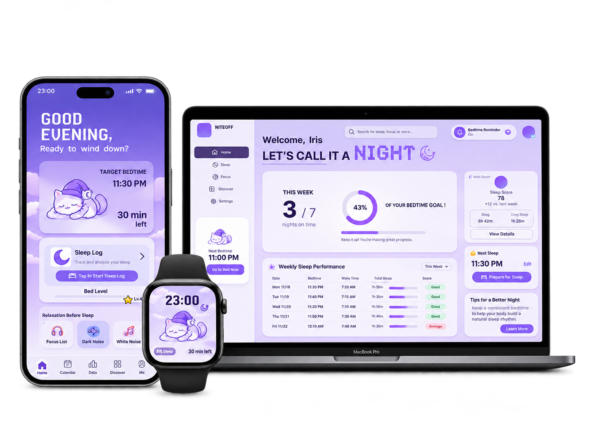

01 / 项目案例
NITEOFF
UI/UX Design / Preventive Health / Cross-device Experience
项目概览
Project Overview
NITEOFF 是一款面向预防性健康的跨设备睡眠习惯管理应用，旨在帮助用户减少熬夜行为，逐步建立更健康的睡前习惯。
项目围绕用户的睡眠时间、睡前行为和个人反思展开，通过睡眠记录、数据可视化、提醒与奖励机制，帮助用户了解自己的作息模式，并在日常生活中逐步调整晚睡习惯。
产品覆盖 iPhone、MacBook 和 Apple Watch 三个设备，探索不同使用场景下的连续性数字体验。
跨设备体验
Cross-device Experience
